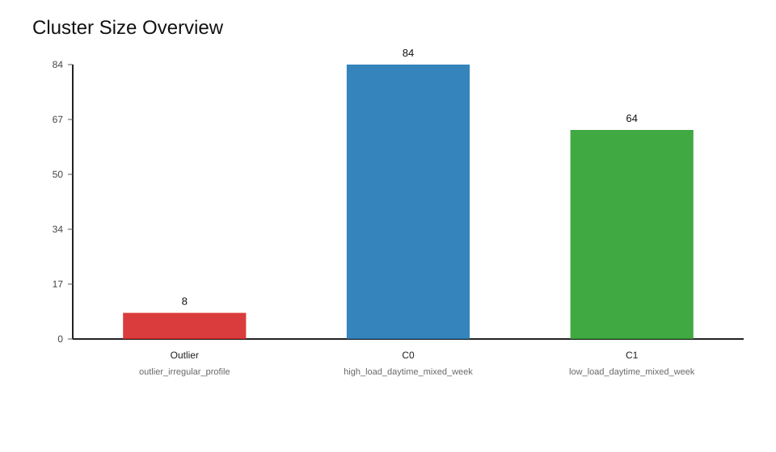
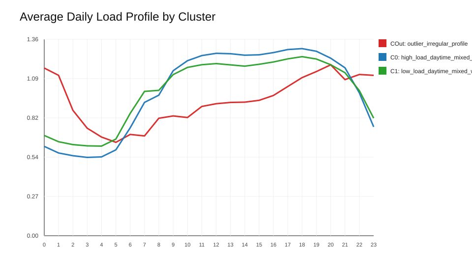
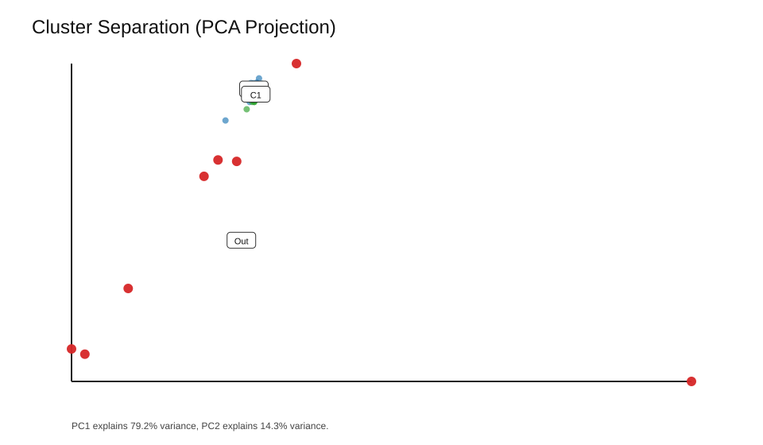

This page summarizes the current train-only user clustering results.



| Cluster | Name | Users | Mean Load | Interpretation |
|---|---|---|---|---|
| -1 | outlier_irregular_profile | 8 | 599.72 | Users in this group were separated as outliers because their training-period profiles are materially different from the main population. |
| 0 | high_load_daytime_mixed_week | 84 | 777.39 | Average load is high, usage is daytime-leaning, and the weekly pattern is mixed_week. |
| 1 | low_load_daytime_mixed_week | 64 | 569.63 | Average load is low, usage is daytime-leaning, and the weekly pattern is mixed_week. |